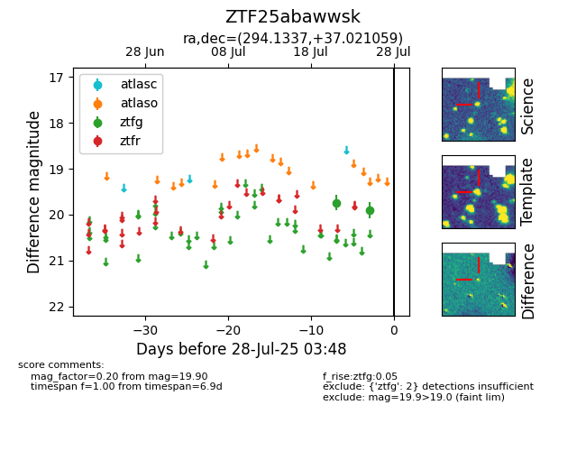

Target ZTF25abawwsk at 2025-07-28 03:48, see:
FINK: fink-portal.org/ZTF25abawwsk
Lasair: lasair-ztf.lsst.ac.uk/objects/ZTF25abawwsk
ALeRCE: alerce.online/object/ZTF25abawwsk
alt names
ZTF25abawwsk (ztf,fink)
coordinates:
equatorial (ra, dec) = (294.1337,+37.02106)
galactic (l, b) = (70.7175,+7.79502)
photometry
last ztfg=19.90
2 ztfg detections
